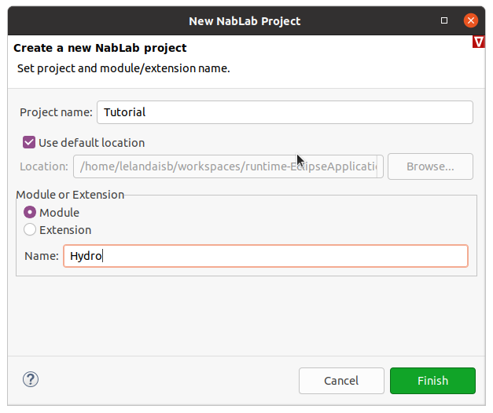
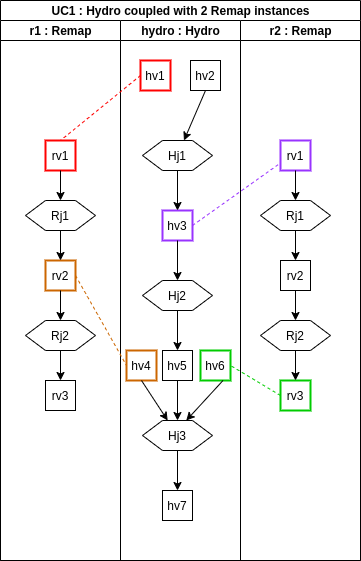

Composing modules
Presentation of the problem
Let us imagine a dummy hydrodynamic module Hydro defined in Hydro.n file and its own application defined in Hydro.ngen file. You now want to introduce a new remapping module Remap. This module does not have its own application. It is designed to be coupled with the hydrodynamic module into one application defined in a HydroRemap.ngen file.
From a NabLab point of view, it consists in merging the data flow graphs of the two modules in defining equalities between module's variables.
Creating the project
Just click on the main menu File > New > NabLab Project to create a new project:

A new wizard is launched, asking for a project name and a module name:

Enter Tutorial as project name, select the Module radio button, enter Hydro as module name and click on the Finish button to create the new project. The new project is available in the Model Explorer on the left of the window. It contains two files (Hydro.n, and Hydro.ngen) in the Tutorial/src/hydro/ folder:
A dummy Hydro module
Here is an example code of a dummy Hydro module. Copy and paste it in Hydro.n file.
module Hydro;
with CartesianMesh2D.*;
ℕ maxIter;
ℝ maxTime, δt;
let ℝ t = 0.0;
ℝ[2] X{nodes};
ℝ hv1{cells}, hv2{cells}, hv3{cells}, hv4{cells}, hv5{cells};
Hj1: ∀c∈cells(), hv2{c} = hv1{c};
Hj2: ∀c∈cells(), hv3{c} = hv2{c};
Hj3: ∀c∈cells(), hv5{c} = hv3{c} + hv4{c};
The algorithm is stupid: the goal is just to introduce dependencies between variables and jobs.
| Job | In Variables | Out Variables |
|---|---|---|
| Hj1 | hv1 | hv2 |
| Hj2 | hv2 | hv3 |
| Hj3 | hv3, hv4 | hv5 |
The Hydro application is defined in a classical Hydro.ngen file (see Ngen language reference for details). Copy and paste it in Hydro.ngen file.
Application Hydro;
MainModule Hydro hydro
{
nodeCoord = X;
time = t;
timeStep = δt;
iterationMax = maxIter;
timeMax = maxTime;
}
StlThread
{
outputPath = "/NablaTest/src-gen-cpp/stl-thread";
CMAKE_CXX_COMPILER = "/usr/bin/g++";
}
The Job Graph Editor, triggered by pressing F2 key on Hydro.ngen file, displays:
Note
Let the mouse over a job to display its in/out variables.
A dummy Remap module
Create now a new file for the Remap module. Just type CTRL-N or click on the main menu File > New > Other to create a new file:

A new wizard is launched, select File:
Click Next>, select the Tutorial/src/hydro folder and enter Remap.n as file name:
Here is an example code of a dummy Remap module. Copy and paste it in Remap.n file.
module Remap;
with CartesianMesh2D.*;
ℝ rv1{cells}, rv2{cells}, rv3{cells};
Rj1: ∀c∈cells(), rv2{c} = rv1{c};
Rj2: ∀c∈cells(), rv3{c} = rv2{c};
The algorithm is as stupid as the Hydro one: the goal is just to introduce dependencies between variables and jobs.
| Job | In Variables | Out Variables |
|---|---|---|
| Rj1 | rv1 | rv2 |
| Rj2 | rv2 | rv3 |
It is not possible to display the graph of jobs because there is no ngen application file for the Remap module. It is not a standalone module and it is designed to be coupled with the Hydro one.
Hydro/Remap association
The aim is to associate the Hydro and Remap modules by coupling their data flow as follows:
We will create a new application from the previous one. In the explorer, copy Hydro.ngen file and paste it in the same folder. A wizard will ask you for the name of the new file, enter HydroRemap.ngen. The new file must appears in the src/hydro folder as follows:
The HydroRemap.ngen file defines the application coupling between Hydro and Remap modules. Change the name of the application from Hydro to HydroRemap at the beginning of the file.
Application HydroRemap;
The Hydro module stays the main module of the application. The Remap module will be added to the application: in the HydroRemap.ngen file, between the MainModule and the StlThread blocks, introduce a block to add the additional module Remap and define variable equalities like they appear in the graph above:
AdditionalModule Remap remap
{
remap.rv1 = hydro.hv1;
remap.rv2 = hydro.hv4;
}
Note
Module names and their variables are available by contextual code completion with CTRL-Space keys.
Only variables of the same type can be declared as equals: the ngen editor will display an error if it is not the case.
The Job Graph Editor, triggered by pressing F2 key on HydroRemap.ngen file, displays:
Note
In this example, there is no iterate instruction to define time iterators and consequently no variable with time iterators like t^{n}. If it is the case, time iterators must belong to the main module: they are forbidden in additional modules.
Code generation
Generate the code in the same way as usual: right-click on the HydroRemap.ngen file and select Generate Code.
The StlThread generation target will produce the following files, as expected:
Multiple additional modules
It is possible to define multiple additional modules, even if they have the same type, as long as they have different name. For example, you can couple 2 Remap modules named r1 and r2 to the Hydro module hydro in the following scenario:

The content of the Hydro.n file becomes:
module Hydro;
with CartesianMesh2D.*;
ℕ maxIter;
ℝ maxTime, δt;
let ℝ t = 0.0;
ℝ[2] X{nodes};
ℝ hv1{cells}, hv2{cells}, hv3{cells}, hv4{cells}, hv5{cells}, hv6{cells}, hv7{cells};
Hj1: ∀c∈cells(), hv3{c} = hv2{c};
Hj2: ∀c∈cells(), hv5{c} = hv3{c};
Hj3: ∀c∈cells(), hv7{c} = hv4{c} + hv5{c} + hv6{c};
The Remap module does not change while the content of the HydroRemap.ngen file integrates two additional modules instead of the previous remap one:
AdditionalModule Remap r1
{
r1.rv1 = h.hv1;
r1.rv2 = h.hv4;
}
AdditionalModule Remap r2
{
r2.rv1 = h.hv3;
r2.rv3 = h.hv6;
}
The StlThread target will generate the following files:
The above picture shows that generated files have the same name as the module instances (defined in the HydroRemap.ngen file) starting with an upper case, i.e. Hydro, R1 and R2.
The Job Graph Editor, triggered by pressing F2 key on HydroRemap.ngen file, now displays: